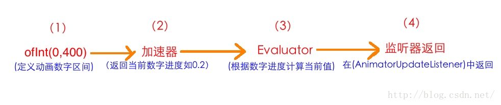
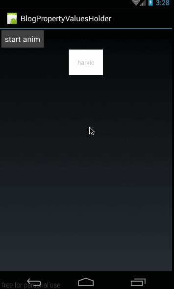
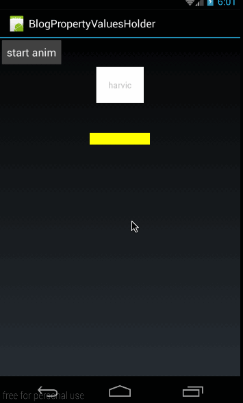
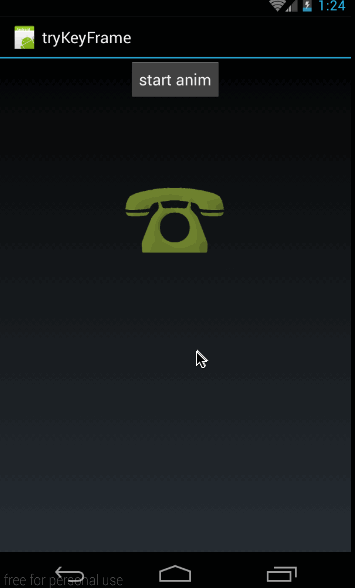
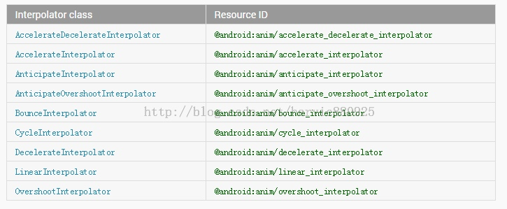
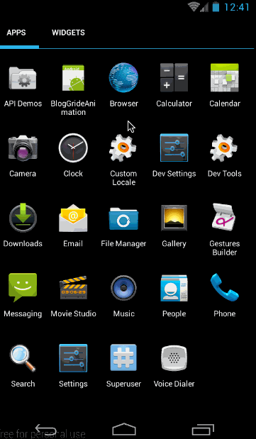
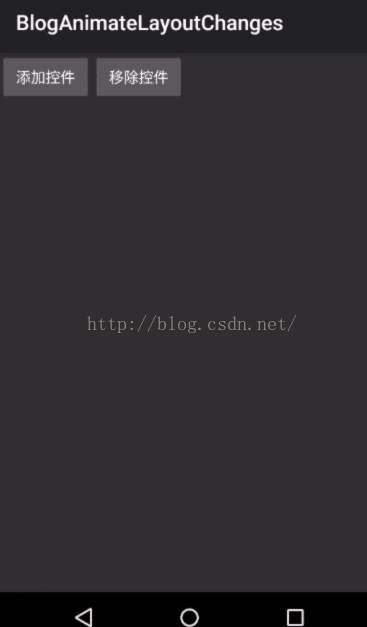

前言
学习Android最重要的就是自定义控件了，好看的人性化的控件总是能抓住客户以及使用者的心，所以从网上学习了部分知识，以及通过自己的实践，总结了自定义控件的学习。在Android动画中，总共有两种类型的动画View Animation(视图动画)和Property Animator(属性动画)。其中：
- View Animation包括Tween Animation（补间动画）和Frame Animation(逐帧动画);
- Property Animator包括ValueAnimator和ObjectAnimation；
- alpha、scale、translate、rotate属于Tween Animation。
不同之处：
- 引入时间不同：View Animation是API Level 1就引入的。Property Animation是API Level 11引入的，即Android 3.0才开始有Property Animation相关的API。
- 所在包名不同：View Animation在包android.view.animation中。而Property Animation API在包 android.animation中。
- 动画类的命名不同：View Animation中动画类取名都叫XXXXAnimation,而在Property Animator中动画类的取名则叫XXXXAnimator
一、alpha、scale、translate、rotate、set(Tween Animation)的xml属性及用法
(一)概述
alpha：渐变透明度动画效果
scale：渐变尺寸伸缩动画效果
translate：画面转换位置移动动画效果
rotate：画面转移旋转动画效果
动作定义的动画文件应当放在res/anim文件夹下，采用R.anim.XXX.xml方式进行访问。
(二)scale标签——调节尺寸
scale是缩放动画
1、自身属性
- android:fromXScale //起始的X方向上相对自身的缩放比例，浮点值，比如1.0代表自身无变化，0.5代表起始时缩小一倍，2.0代表放大一倍;
- android:toXScale //结尾的X方向上相对自身的缩放比例，浮点值;
- android:fromYScale //起始的Y方向上相对自身的缩放比例，浮点值;
- android:toYScale //结尾的Y方向上相对自身的缩放比例，浮点值;
- android:pivotX //缩放起点X轴坐标，可以是数值、百分数、百分数p 三种样式，比如 50、50%、50%p，当为数值时，表示在当前View的左上角，即原点处加上50px，做为起始缩放点；如果是50%，表示在当前控件的左上角加上自己宽度的50%做为起始点；如果是50%p，那么就是表示在当前的左上角加上父控件宽度的50%做为起始点x轴坐标。
- android:pivotY //缩放起点Y轴坐标，取值及意义跟android:pivotX一样。
2、从Animation类继承的属性
- android:duration //动画持续时间，以毫秒为单位
- android:fillAfte //如果设置为true，控件动画结束时，将保持动画最后时的状态
- android:fillBefore //如果设置为true,控件动画结束时，还原到开始动画前的状态
- android:fillEnabled //与android:fillBefore 效果相同，都是在动画结束时，将控件还原到初始化状态
- android:repeatCount //重复次数
- android:repeatMode //重复类型，有reverse和restart两个值，reverse表示倒序回放，restart表示重新放一遍，必须与repeatCount一起使用才能看到效果。因为这里的意义是重复的类型，即回放时的动作.
- android:interpolator //设定插值器，其实就是指定的动作效果，比如弹跳效果等，不在这小节中讲解，后面会单独列出一单讲解。
(三)alpha标签——调节透明度
1、自身属性
- android:fromAlpha //动画开始的透明度，从0.0 --1.0 ，0.0表示全透明，1.0表示完全不透明
- android:toAlpha //动画结束时的透明度，也是从0.0 --1.0 ，0.0表示全透明，1.0表示完全不透明
(四)rotate标签——旋转
1、自身属性
- android:fromDegrees //开始旋转的角度位置，正值代表顺时针方向度数，负值代码逆时针方向度数
- android:toDegrees //结束时旋转到的角度位置，正值代表顺时针方向度数，负值代码逆时针方向度数
- android:pivotX //放起点X轴坐标，可以是数值、百分数、百分数p 三种样式，比如 50、50%、50%p.
- android:pivotY //缩放起点Y轴坐标，可以是数值、百分数、百分数p 三种样式，比如 50、50%、50%p
(五)translate标签 —— 平移
1、自身属性
- android:fromXDelta //起始点X轴坐标，可以是数值、百分数、百分数p 三种样式，比如 50、50%、50%p
- android:fromYDelta //起始点Y轴坐标，可以是数值、百分数、百分数p 三种样式
- android:toXDelta //结束点X轴坐标
- android:toYDelta //结束点Y轴坐标
(六)set标签——定义动作合集
set标签自已是没有属性的，他的属性都是从Animation继承而来，但当它们用于Set标签时，就会对Set标签下的所有子控件都产生作用。
(七)示例
<?xml version="1.0" encoding="utf-8"?>
<set xmlns:android="http://schemas.android.com/apk/res/android"
android:duration="3000"
android:fillAfter="true">
<alpha
android:fromAlpha="0.0"
android:toAlpha="1.0"/>
<scale
android:fromXScale="0.0"
android:toXScale="1.4"
android:fromYScale="0.0"
android:toYScale="1.4"
android:pivotX="50%"
android:pivotY="50%"/>
<rotate
android:fromDegrees="0"
android:toDegrees="720"
android:pivotX="50%"
android:pivotY="50%"/>
</set>
(八)使用Animation
- 通过
scaleAnimation = AnimationUtils.loadAnimation(this, R.anim.scaleanim);从XML文件中获取动画
- 利用
startAnimation(animation);将动画传递给指定控件显示。
二、Interpolator插值器
(一)概述
Interpolator属性是Animation类的一个XML属性，所以alpha、scale、rotate、translate、set都会继承得到这个属性。Interpolator被译为插值器，指定动画如何变化，跟PS里的动作有点类似：随便拿来一张图片，应用一个动作，图片就会指定变化。
Interpolator的系统值有下面几个：
- AccelerateDecelerateInterpolator //在动画开始与介绍的地方速率改变比较慢，在中间的时候加速
- AccelerateInterpolator //在动画开始的地方速率改变比较慢，然后开始加速
- AnticipateInterpolator //开始的时候向后然后向前甩
- AnticipateOvershootInterpolator //开始的时候向后然后向前甩一定值后返回最后的值
- BounceInterpolator //动画结束的时候弹起
- CycleInterpolator //动画循环播放特定的次数，速率改变沿着正弦曲线
- DecelerateInterpolator //在动画开始的地方快然后慢
- LinearInterpolator //以常量速率改变
- OvershootInterpolator //向前甩一定值后再回到原来位置
三、用代码实现Animation
(一)Animation类是所有动画的基类，它所具有的标签对应的函数：
- android:duration —— setDuration(long) //动画持续时间，以毫秒为单位
- android:fillAfter —— setFillAfter(boolean) //如果设置为true，控件动画结束时，将保持动画最后时的状态
- android:fillBefore —— setFillBefore(boolean) //如果设置为true,控件动画结束时，还原到开始动画前的状态
- android:fillEnabled —— setFillEnabled(boolean) //与android:fillBefore 效果相同，都是在动画结束时，将控件还原到初始化状态
- android:repeatCount —— setRepeatCount(int) //重复次数
- android:repeatMode —— setRepeatMode(int) //重复类型，有reverse和restart两个值，取值为RESTART或 REVERSE，必须与repeatCount一起使用才能看到效果。因为这里的意义是重复的类型，即回放时的动作。
- android:interpolator —— setInterpolator(Interpolator) //设定插值器，其实就是指定的动作效果，比如弹跳效果等
(二)ScaleAnimation
这是scale标签对应的类
构造函数：
- ScaleAnimation(Context context, AttributeSet attrs) //从XML文件加载动画，基本用不到
- ScaleAnimation(float fromX, float toX, float fromY, float toY)
- ScaleAnimation(float fromX, float toX, float fromY, float toY, float pivotX, float pivotY)
- ScaleAnimation(float fromX, float toX, float fromY, float toY, int pivotXType, float pivotXValue, int pivotYType, float pivotYValue)
第一个构造函数是从本地XML文件加载动画，基本用不到的，我们主要看下面三个构造函数.在标签属性android:pivotX中有三种取值，数，百分数，百分数p；体现在构造函数中，就是最后一个构造函数的pivotXType,它的取值有三个，Animation.ABSOLUTE、Animation.RELATIVE_TO_SELF和Animation.RELATIVE_TO_PARENT；
示例：
构造的XML代码：
<?xml version="1.0" encoding="utf-8"?>
<scale xmlns:android="http://schemas.android.com/apk/res/android"
android:fromXScale="0.0"
android:toXScale="1.4"
android:fromYScale="0.0"
android:toYScale="1.4"
android:pivotX="50"
android:pivotY="50"
android:duration="700" />
对应的代码为：
scaleAnim = new ScaleAnimation(0.0f,1.4f,0.0f,1.4f,Animation.RELATIVE_TO_SELF,0.5f,Animation.RELATIVE_TO_SELF,0.5f);
scaleAnim.setDuration(700);
(三)AlphaAnimation
这是alpha标签对应的类
构造函数：
- AlphaAnimation(Context context, AttributeSet attrs) //同样，从本地XML加载动画，基本不用
- AlphaAnimation(float fromAlpha, float toAlpha)
示例：
构造的XML代码：
<?xml version="1.0" encoding="utf-8"?>
<alpha xmlns:android="http://schemas.android.com/apk/res/android"
android:fromAlpha="1.0"
android:toAlpha="0.1"
android:duration="3000"
android:fillBefore="true">
</alpha>
对应的代码为：
alphaAnim = new AlphaAnimation(1.0f,0.1f);
alphaAnim.setDuration(3000);
alphaAnim.setFillBefore(true);
(四) RotateAnimation
RotateAnimation类对应Rotate标签
构造函数：
- RotateAnimation(Context context, AttributeSet attrs) //从本地XML文档加载动画，同样，基本不用
- RotateAnimation(float fromDegrees, float toDegrees)
- RotateAnimation(float fromDegrees, float toDegrees, float pivotX, float pivotY)
- RotateAnimation(float fromDegrees, float toDegrees, int pivotXType, float pivotXValue, int pivotYType, float pivotYValue)
示例：
构造的XML代码：
<?xml version="1.0" encoding="utf-8"?>
<rotate xmlns:android="http://schemas.android.com/apk/res/android"
android:fromDegrees="0"
android:toDegrees="-650"
android:pivotX="50%"
android:pivotY="50%"
android:duration="3000"
android:fillAfter="true">
</rotate>
对应的代码为：
rotateAnim = new RotateAnimation(0, -650, Animation.RELATIVE_TO_SELF, 0.5f, Animation.RELATIVE_TO_SELF, 0.5f);
rotateAnim.setDuration(3000);
rotateAnim.setFillAfter(true);
(五)TranslateAnimation
TranslateAnimation类对应translate标签
构造函数：
- TranslateAnimation(Context context, AttributeSet attrs) //同样，基本不用
- TranslateAnimation(float fromXDelta, float toXDelta, float fromYDelta, float toYDelta) //使用是绝对数值
- TranslateAnimation(int fromXType, float fromXValue, int toXType, float toXValue, int fromYType, float fromYValue, int toYType, float toYValue) //最理想的状态就是这个构造函数，能够指定每个值的类型。只有这个构造函数可以指定百分数和相对父控件的百分数。
示例：
构造的XML代码：
<?xml version="1.0" encoding="utf-8"?>
<translate xmlns:android="http://schemas.android.com/apk/res/android"
android:fromXDelta="0"
android:toXDelta="-80"
android:fromYDelta="0"
android:toYDelta="-80"
android:duration="2000"
android:fillBefore="true">
</translate>
对应的代码为：
translateAnim = new TranslateAnimation(Animation.ABSOLUTE, 0, Animation.ABSOLUTE, -80,
Animation.ABSOLUTE, 0, Animation.ABSOLUTE, -80);
translateAnim.setDuration(2000);
translateAnim.setFillBefore(true);
(六)AnimationSet
AnimationSet类对应set标签，定义动作类的集合
构造函数：
- AnimationSet(Context context, AttributeSet attrs) //同样，基本不用
- AnimationSet(boolean shareInterpolator) //shareInterpolator取值true或false，取true时，指在AnimationSet中定义一个插值器（interpolater），它下面的所有动画共同。如果设为false，则表示它下面的动画自己定义各自的插值器。
增加动画函数
public void addAnimation (Animation a)
示例：
构造的XML代码：
<?xml version="1.0" encoding="utf-8"?>
<set xmlns:android="http://schemas.android.com/apk/res/android"
android:duration="3000"
android:fillAfter="true">
<alpha
android:fromAlpha="0.0"
android:toAlpha="1.0"/>
<scale
android:fromXScale="0.0"
android:toXScale="1.4"
android:fromYScale="0.0"
android:toYScale="1.4"
android:pivotX="50%"
android:pivotY="50%"/>
<rotate
android:fromDegrees="0"
android:toDegrees="720"
android:pivotX="50%"
android:pivotY="50%"/>
</set>
对应的代码为：
alphaAnim = new AlphaAnimation(1.0f,0.1f);
scaleAnim = new ScaleAnimation(0.0f,1.4f,0.0f,1.4f,Animation.RELATIVE_TO_SELF,0.5f,Animation.RELATIVE_TO_SELF,0.5f);
rotateAnim = new RotateAnimation(0, 720, Animation.RELATIVE_TO_SELF, 0.5f, Animation.RELATIVE_TO_SELF, 0.5f);
setAnim=new AnimationSet(true);
setAnim.addAnimation(alphaAnim);
setAnim.addAnimation(scaleAnim);
setAnim.addAnimation(rotateAnim);
setAnim.setDuration(3000);
setAnim.setFillAfter(true);
(七) Interpolater插值器
代码使用方法：
ScaleAnimation interpolateScaleAnim=new ScaleAnimation(0.0f,1.4f,0.0f,1.4f,Animation.RELATIVE_TO_SELF,0.5f,Animation.RELATIVE_TO_SELF,0.5f);
interpolateScaleAnim.setInterpolator(new BounceInterpolator());
interpolateScaleAnim.setDuration(3000);
四、ValueAnimator基本使用
(一)概述
1、为什么要引入Property Animator(属性动画)
1、Property Animator能实现补间动画无法实现的功能
补间动画和逐帧动画统称为View Animation，也就是说这两个动画只能对派生自View的控件
实例起作用；而Property Animator则不同，从名字中可以看出属性动画，应该是作用于控件
属性的！正因为属性动画能够只针对控件的某一个属性来做动画，所以也就造就了他能单独改变
控件的某一个属性的值！比如颜色！这就是Property Animator能实现补间动画无法实现的功
能的最重要原因。
2、View Animation仅能对指定的控件做动画，而Property Animator是通过改变控件某一
属性值来做动画的。
假设我们将一个按钮从左上角利用补间动画将其移动到右下角，在移动过程中和移动后，这个按钮
都是不会响应点击事件的。这是为什么呢？因为补间动画仅仅转变的是控件的显示位置而已，并没
有改变控件本身的值。View Animation的动画实现是通过其Parent View实现的，在View被
drawn时Parents View改变它的绘制参数，这样虽然View的大小或旋转角度等改变了，但View
的实际属性没变，所以有效区域还是应用动画之前的区域；我们看到的效果仅仅是系统作用在按钮
上的显示效果，利用动画把按钮从原来的位置移到了右下角，但按钮内部的任何值是没有变化的，
所以按钮所捕捉的点击区域仍是原来的点击区域。
3、补间动画虽能对控件做动画，但并没有改变控件内部的属性值。而Property Animator则是
恰恰相反，Property Animator是通过改变控件内部的属性值来达到动画效果的
(二)ValueAnimator简单使用
1、初步使用ValueAnimator
创建ValueAnimator实例
ValueAnimator animator = ValueAnimator.ofInt(0,400);
animator.setDuration(1000);
animator.start();
利用ValueAnimator.ofInt创建了一个值从0到400的动画，动画时长是1s，然后让动画开始。从这段代码中可以看出，ValueAnimator没有跟任何的控件相关联，那也正好说明ValueAnimator只是对值做动画运算，而不是针对控件的，我们需要监听ValueAnimator的动画过程来自己对控件做操作。
添加监听
ValueAnimator animator = ValueAnimator.ofInt(0,400);
animator.setDuration(1000);
animator.addUpdateListener(new ValueAnimator.AnimatorUpdateListener() {
@Override
public void onAnimationUpdate(ValueAnimator animation) {
int curValue = (int)animation.getAnimatedValue();
Log.d("qijian","curValue:"+curValue);
tv.layout(curValue,curValue,curValue+tv.getWidth(),curValue+tv.getHeight());
}
});
animator.start();
这就是ValueAnimator的功能：ValueAnimator对指定值区间做动画运算，我们通过对运算过程做监听来自己操作控件。
总结
- ValueAnimator只负责对指定的数字区间进行动画运算
- 我们需要对运算过程进行监听，然后自己对控件做动画操作
2、常用函数
- ValueAnimator setDuration(long duration) //设置一次动画的时长，单位是毫秒
- void start() //开始动画
- Object getAnimatedValue(); //获取动画在当前运动点的值，所以这个对象只能用于在动画运动中。返回的值是Object,上面我们说过，通过getAnimatedValue()得到的值的实际类型与初始设置的值相同，如果我们利用ofInt（）设置的动画，那通过getAnimatedValue()得到的值为类型就是Int类型。如果我们利用ofFloat（）设置的动画，通过getAnimatedValue()得到的值类型就是Float类型。
- void setRepeatCount(int value) //设置循环次数,设置为INFINITE表示无限循环
- setRepeatMode(int value) //设置循环模式,value取值有RESTART，REVERSE
- cancel() //取消动画
3、监听器
- AnimatorUpdateListener就是监听动画的实时变化状态，在onAnimationUpdate(ValueAnimator animation)中的animation表示当前状态动画的实例。添加AnimatorUpdateListener的方法是addUpdateListener(AnimatorListener listener)。
- 在AnimatorListener中，主要是监听Animation的四个状态，start、end、cancel、repeat；当动画开始时，会调用onAnimationStart(Animator animation)方法，当动画结束时调用onAnimationEnd(Animator animation)，当动画取消时，调用onAnimationCancel(Animator animation)函数，当动画重复时，会调用onAnimationRepeat(Animator animation)函数。添加AnimatorListener的方法是addListener(AnimatorListener listener)。
- void removeUpdateListener(AnimatorUpdateListener listener); //移除AnimatorUpdateListener
- void removeAllUpdateListeners(); //移除AnimatorUpdateListener
- void removeListener(AnimatorListener listener); //用于在animator中移除指定的监听器
- void removeAllListeners(); //用于移除animator中所有的AnimatorListener监听器
4、其他函数
- public void setStartDelay(long startDelay); //延时多久时间开始，单位是毫秒
- public ValueAnimator clone(); //完全克隆一个ValueAnimator实例，包括它所有的设置以及所有对监听器代码的处理
5、插值器
控制动画的加速变化
animator.setInterpolator(new BounceInterpolator()); //简单使用
6、自定义插值器
public class LinearInterpolator implements TimeInterpolator {
public LinearInterpolator() {
}
public LinearInterpolator(Context context, AttributeSet attrs) {
}
/**
*主要重写该方法，对动画的进度从0到1进行调节
**/
public float getInterpolation(float input) {
return input;
}
}
7、Evaluator

这幅图讲述了从定义动画的数字区间到通过AnimatorUpdateListener中得到当前动画所对应数值的整个过程。下面我们对这四个步骤具体讲解一下：
(1)、ofInt(0,400)表示指定动画的数字区间，是从0运动到400；
(2)、加速器：上面我们讲了，在动画开始后，通过加速器会返回当前动画进度所对应的数字进度，但这个数字进度是百分制的，以小数表示，如0.2
(3)、Evaluator:我们知道我们通过监听器拿到的是当前动画所对应的具体数值，而不是百分制的进度。那么就必须有一个地方会根据当前的数字进度，将其转化为对应的数值，这个地方就是Evaluator；Evaluator就是将从加速器返回的数字进度转成对应的数字值。所以上部分中，我们讲到的公式：
当前的值 = 100 + （400 - 100）* 显示进度
这个公式就是在Evaluator计算的；在拿到当前数字进度所对应的值以后，将其返回
（4）、监听器：我们通过在AnimatorUpdateListener监听器使用animation.getAnimatedValue()函数拿到Evaluator中返回的数字值。
ofInt和ofFloat都是系统直接提供的函数，所以在使用时都会有默认的加速器和Evaluator来使用的，不指定则使用默认的；对于Evaluator而言，ofInt()的默认Evaluator当然是IntEvaluator;而FloatEvalutar默认的则是FloatEvalutor; Evalutor一般来讲不能通用，会报强转错误，也就是说，只有在数值类型相同的情况下，Evalutor才能共用。
Evaluator其实就是一个转换器，他能把小数进度转换成对应的数值位置
8、自定义Evaluator
public class MyEvaluator implements TypeEvaluator<Integer> {
@Override
public Integer evaluate(float fraction, Integer startValue, Integer endValue) {
int startInt = startValue;
return (int)(200+startInt + fraction * (endValue - startInt));
}
}
我们可以通过重写加速器改变数值进度来改变数值位置，也可以通过改变Evaluator中进度所对应的数值来改变数值位置。
9、ArgbEvalutor
ArgbEvalutor是用来做颜色值过渡转换的。
ValueAnimator animator = ValueAnimator.ofInt(0xffffff00,0xff0000ff);
animator.setEvaluator(new ArgbEvaluator());
animator.setDuration(3000);
10、ofInt(),ofFloat(),ofObject()
ofInt()只能传入Integer类型的值,而ofFloat（）则只能传入Float类型的值,ofObject(),可以传进去任何类型的变量.
ofObject()示例
1、简单示例
ValueAnimator animator = ValueAnimator.ofObject(new CharEvaluator(),new Character('A'),new Character('Z'));
animator.addUpdateListener(new ValueAnimator.AnimatorUpdateListener() {
@Override
public void onAnimationUpdate(ValueAnimator animation) {
char text = (char)animation.getAnimatedValue();
tv.setText(String.valueOf(text));
}
});
animator.setDuration(10000);
animator.setInterpolator(new AccelerateInterpolator());
animator.start();
2、自定义示例

在这里，我们自定义了一个View，在这个view上画一个圆，但这个圆是有动画效果的。从效果中可以看出使用的插值器应该是回弹插值器(BounceInterpolator)。下面就来看看这个动画是怎么做出来的。
首先，我们自定义一个类Point
public class Point {
private int radius;
public Point(int radius){
this.radius = radius;
}
public int getRadius() {
return radius;
}
public void setRadius(int radius) {
this.radius = radius;
}
}
然后我们自定义一个View:MyPointView
public class MyPointView extends View {
private Point mCurPoint;
public MyPointView(Context context, AttributeSet attrs) {
super(context, attrs);
}
@Override
protected void onDraw(Canvas canvas) {
super.onDraw(canvas);
if (mCurPoint != null){
Paint paint = new Paint();
paint.setAntiAlias(true);
paint.setColor(Color.RED);
paint.setStyle(Paint.Style.FILL);
canvas.drawCircle(300,300,mCurPoint.getRadius(),paint);
}
}
public void doPointAnim(){
ValueAnimator animator = ValueAnimator.ofObject(new PointEvaluator(),new Point(20),new Point(200));
animator.addUpdateListener(new ValueAnimator.AnimatorUpdateListener() {
@Override
public void onAnimationUpdate(ValueAnimator animation) {
mCurPoint = (Point)animation.getAnimatedValue();
invalidate();
}
});
animator.setDuration(1000);
animator.setInterpolator(new BounceInterpolator());
animator.start();
}
}
在布局中添加入自定义View，然后在主界面中调用
public class MyActivity extends Activity {
private Button btnStart;
private MyPointView mPointView;
@Override
public void onCreate(Bundle savedInstanceState) {
super.onCreate(savedInstanceState);
setContentView(R.layout.main);
btnStart = (Button) findViewById(R.id.btn);
mPointView = (MyPointView)findViewById(R.id.pointview);
btnStart.setOnClickListener(new View.OnClickListener() {
@Override
public void onClick(View v) {
mPointView.doPointAnim();
}
});
}
}
(三)ObjectAnimator基础使用
为了能让动画直接与对应控件相关联，以使我们从监听动画过程中解放出来，谷歌的开发人员在ValueAnimator的基础上，又派生了一个类ObjectAnimator; 由于ObjectAnimator是派生自ValueAnimator的，所以ValueAnimator中所能使用的方法，在ObjectAnimator中都可以正常使用。但ObjectAnimator也重写了几个方法，比如ofInt(),ofFloat()等。
改变透明度示例
ObjectAnimator animator = ObjectAnimator.ofFloat(tv,"alpha",1,0,1);
animator.setDuration(2000);
animator.start();
构造函数
public static ObjectAnimator ofFloat(Object target, String propertyName, float... values)
- 第一个参数用于指定这个动画要操作的是哪个控件
- 第二个参数用于指定这个动画要操作这个控件的哪个属性(rotationX-围绕X轴，rotationY-围绕Y轴，rotation围绕Z轴，translationX-在X轴上水平移动，translationY-在Y轴上水平移动，scaleX-在X轴上缩放倍数，scaleY-在Y轴上缩放倍数)
- 第三个参数是可变长参数，这个就跟ValueAnimator中的可变长参数的意义一样了，就是指这个属性值是从哪变到哪
自定义ObjectAnimator属性
1、保存圆形信息类——Point
public class Point {
private int mRadius;
public Point(int radius){
mRadius = radius;
}
public int getRadius() {
return mRadius;
}
public void setRadius(int radius) {
mRadius = radius;
}
}
2、自定义控件——MyPointView
public class MyPointView extends View {
private Point mPoint = new Point(100);
public MyPointView(Context context, AttributeSet attrs) {
super(context, attrs);
}
@Override
protected void onDraw(Canvas canvas) {
if (mPoint != null){
Paint paint = new Paint();
paint.setAntiAlias(true);
paint.setColor(Color.RED);
paint.setStyle(Paint.Style.FILL);
canvas.drawCircle(300,300,mPoint.getRadius(),paint);
}
super.onDraw(canvas);
}
void setPointRadius(int radius){
mPoint.setRadius(radius);
invalidate();
}
}
3、MyActivity
public class MyActivity extends Activity {
private Button btnStart;
private MyPointView mPointView;
@Override
public void onCreate(Bundle savedInstanceState) {
super.onCreate(savedInstanceState);
setContentView(R.layout.main);
btnStart = (Button) findViewById(R.id.btn);
mPointView = (MyPointView)findViewById(R.id.pointview);
btnStart.setOnClickListener(new View.OnClickListener() {
@Override
public void onClick(View v) {
doPointViewAnimation();
}
});
}
private void doPointViewAnimation(){
ObjectAnimator animator = ObjectAnimator.ofInt(mPointView, "pointRadius", 0, 300, 100);
animator.setDuration(2000);
animator.start();
}
}
五、PropertyValuesHolder与Keyframe
ValueAnimator和ObjectAnimator除了通过ofInt(),ofFloat(),ofObject()创建实例外，还都有一个ofPropertyValuesHolder()方法来创建实例。通常ValueAnimator使用ofPropertyValuesHolder()的机会不多，所以只讲ObjectAnimator中ofPropertyValuesHolder()的用法。对于ValueAnimator的ofPropertyValuesHolder()使用是差不多的。
(一)PropertyValuesHolder
1、概述
PropertyValuesHolder这个类的意义就是，它其中保存了动画过程中所需要操作的属性和对应的值。我们通过ofFloat(Object target, String propertyName, float… values)构造的动画，ofFloat()的内部实现其实就是将传进来的参数封装成PropertyValuesHolder实例来保存动画状态。在封装成PropertyValuesHolder实例以后，后期的各种操作也是以PropertyValuesHolder为主的。
创建实例的函数
public static PropertyValuesHolder ofFloat(String propertyName, float... values)
public static PropertyValuesHolder ofInt(String propertyName, int... values)
public static PropertyValuesHolder ofObject(String propertyName, TypeEvaluator evaluator,Object... values)
public static PropertyValuesHolder ofKeyframe(String propertyName, Keyframe... values)
这里总共有四个创建实例的方法，这一段我们着重讲ofFloat、ofInt和ofObject的用法，ofKeyframe我们单独讲。
2、PropertyValuesHolder之ofFloat()、ofInt()
（1）ofFloat()、ofInt()
构造函数
public static PropertyValuesHolder ofFloat(String propertyName, float... values)
public static PropertyValuesHolder ofInt(String propertyName, int... values)
- propertyName：表示ObjectAnimator需要操作的属性名。即ObjectAnimator需要通过反射查找对应属性的setProperty()函数的那个property.
- values：属性所对应的参数，同样是可变长参数，可以指定多个，还记得我们在ObjectAnimator中讲过，如果只指定了一个，那么ObjectAnimator会通过查找getProperty()方法来获得初始值。
（2）、ObjectAnimator.ofPropertyValuesHolder()
ObjectAnimator提供了一个设置PropertyValuesHolder实例的入口：
public static ObjectAnimator ofPropertyValuesHolder(Object target,PropertyValuesHolder... values);
- target：指需要执行动画的控件
- values：是一个可变长参数，可以传进去多个PropertyValuesHolder实例，由于每个PropertyValuesHolder实例都会针对一个属性做动画，所以如果传进去多个PropertyValuesHolder实例，将会对控件的多个属性同时做动画操作。
示例

PropertyValuesHolder rotationHolder = PropertyValuesHolder.ofFloat("Rotation", 60f, -60f, 40f, -40f, -20f, 20f, 10f, -10f, 0f);
PropertyValuesHolder colorHolder = PropertyValuesHolder.ofInt("BackgroundColor", 0xffffffff, 0xffff00ff, 0xffffff00, 0xffffffff);
ObjectAnimator animator = ObjectAnimator.ofPropertyValuesHolder(mTextView, rotationHolder, colorHolder);
animator.setDuration(3000);
animator.setInterpolator(new AccelerateInterpolator());
animator.start();
3、PropertyValuesHolder之ofObject()
ofObject的构造函数
public static PropertyValuesHolder ofObject(String propertyName, TypeEvaluator evaluator,Object... values);
- propertyName:ObjectAnimator动画操作的属性名;
- evaluator:Evaluator实例，Evaluator是将当前动画进度计算出当前值的类，可以使用系统自带的IntEvaluator、FloatEvaluator也可以自定义。
- values：可变长参数，表示操作动画属性的值。
示例

通过自字义的CharEvaluator来自动实现字母的改变与计算。
首先是自定义一个CharEvaluator,通过进度值来自动计算出当前的字母:
public class CharEvaluator implements TypeEvaluator<Character> {
@Override
public Character evaluate(float fraction, Character startValue, Character endValue) {
int startInt = (int)startValue;
int endInt = (int)endValue;
int curInt = (int)(startInt + fraction *(endInt - startInt));
char result = (char)curInt;
return result;
}
}
从CharEvaluator中可以看出，从CharEvaluator中产出的动画中间值类型为Character类型。TextView中虽然有setText(CharSequence text) 函数，但这个函数的参数类型是CharSequence，而不是Character类型。所以我们要自定义一个类派生自TextView来改变TextView的字符
public class MyTextView extends TextView {
public MyTextView(Context context, AttributeSet attrs) {
super(context, attrs);
}
public void setCharText(Character character){
setText(String.valueOf(character));
}
}
最后MyActivity,在点击按钮的时候开始动画，核心代码为:
public class MyActivity extends Activity {
private Button btn;
private TextView mTextView;
private MyTextView mMyTv;
@Override
public void onCreate(Bundle savedInstanceState) {
super.onCreate(savedInstanceState);
setContentView(R.layout.main);
mMyTv = (MyTextView)findViewById(R.id.mytv);
btn = (Button) findViewById(R.id.btn);
btn.setOnClickListener(new View.OnClickListener() {
@Override
public void onClick(View v) {
doOfObjectAnim();
}
});
}
private void doOfObjectAnim(){
PropertyValuesHolder charHolder = PropertyValuesHolder.ofObject("CharText",new CharEvaluator(),new Character('A'),new Character('Z'));
ObjectAnimator animator = ObjectAnimator.ofPropertyValuesHolder(mMyTv, charHolder);
animator.setDuration(3000);
animator.setInterpolator(new AccelerateInterpolator());
animator.start();
}
}
3、Keyframe
(1) 概述
----我们知道如果要控制动画速率的变化，我们可以通过自定义插值器，也可以通过自定义Evaluator来实现。但如果真的让我们为了速率变化效果而自定义插值器或者Evaluator的话，恐怕大部分同学会有一万头草泥马在眼前奔过，因为大部分的同学的数学知识已经还给老师了。
----为了解决方便的控制动画速率的问题，谷歌为了我等屁民定义了一个KeyFrame的类，KeyFrame直译过来就是关键帧。
----关键帧这个概念是从动画里学来的，我们知道视频里，一秒要播放24帧图片，对于制作flash动画的同学来讲，是不是每一帧都要画出来呢？当然不是了，如果每一帧都画出来，那估计做出来一个动画片都得要一年时间；比如我们要让一个球在30秒时间内，从（0,0）点运动到（300，200）点，那flash是怎么来做的呢，在flash中，我们只需要定义两个关键帧，在动画开始时定义一个，把球的位置放在(0,0)点；在30秒后，再定义一个关键帧，把球的位置放在（300，200）点。在动画 开始时，球初始在是（0，0）点，30秒时间内就adobe flash就会自动填充，把球平滑移动到第二个关键帧的位置（300，200）点；
----通过上面分析flash动画的制作原理，我们知道，一个关键帧必须包含两个原素，第一时间点，第二位置。即这个关键帧是表示的是某个物体在哪个时间点应该在哪个位置上。
----所以谷歌的KeyFrame也不例外，KeyFrame的生成方式为：
public static Keyframe ofFloat(float fraction, float value);
- fraction：表示当前的显示进度，即从加速器中getInterpolation()函数的返回值；
- value：表示当前应该在的位置
比如Keyframe.ofFloat(0, 0)表示动画进度为0时，动画所在的数值位置为0；Keyframe.ofFloat(0.25f, -20f)表示动画进度为25%时，动画所在的数值位置为-20；Keyframe.ofFloat(1f,0)表示动画结束时，动画所在的数值位置为0；在理解了KeyFrame.ofFloat()的参数以后，我们来看看PropertyValuesHolder是如何使用KeyFrame对象的：
public static PropertyValuesHolder ofKeyframe(String propertyName, Keyframe... values);
- propertyName：动画所要操作的属性名
- values：Keyframe的列表，PropertyValuesHolder会根据每个Keyframe的设定，定时将指定的值输出给动画。
完整的KeyFrame使用代码：
Keyframe frame0 = Keyframe.ofFloat(0f, 0);
Keyframe frame1 = Keyframe.ofFloat(0.1f, -20f);
Keyframe frame2 = Keyframe.ofFloat(1, 0);
PropertyValuesHolder frameHolder = PropertyValuesHolder.ofKeyframe("rotation",frame0,frame1,frame2);
Animator animator = ObjectAnimator.ofPropertyValuesHolder(mImage,frameHolder);
animator.setDuration(1000);
animator.start();
第一步：生成Keyframe对象；
第二步：利用PropertyValuesHolder.ofKeyframe()生成PropertyValuesHolder对象
第三步：ObjectAnimator.ofPropertyValuesHolder()生成对应的Animator
(2)示例

public class MyActivity extends Activity {
private ImageView mImage;
private Button mBtn;
@Override
public void onCreate(Bundle savedInstanceState) {
super.onCreate(savedInstanceState);
setContentView(R.layout.main);
mImage = (ImageView)findViewById(R.id.img);
mBtn = (Button)findViewById(R.id.btn);
mBtn.setOnClickListener(new View.OnClickListener() {
@Override
public void onClick(View v) {
doOfFloatAnim();
}
});
}
private void doOfFloatAnim(){
/**
* 左右震动效果
*/
Keyframe frame0 = Keyframe.ofFloat(0f, 0);
Keyframe frame1 = Keyframe.ofFloat(0.1f, -20f);
Keyframe frame2 = Keyframe.ofFloat(0.2f, 20f);
Keyframe frame3 = Keyframe.ofFloat(0.3f, -20f);
Keyframe frame4 = Keyframe.ofFloat(0.4f, 20f);
Keyframe frame5 = Keyframe.ofFloat(0.5f, -20f);
Keyframe frame6 = Keyframe.ofFloat(0.6f, 20f);
Keyframe frame7 = Keyframe.ofFloat(0.7f, -20f);
Keyframe frame8 = Keyframe.ofFloat(0.8f, 20f);
Keyframe frame9 = Keyframe.ofFloat(0.9f, -20f);
Keyframe frame10 = Keyframe.ofFloat(1, 0);
PropertyValuesHolder frameHolder1 = PropertyValuesHolder.ofKeyframe("rotation", frame0, frame1, frame2, frame3, frame4,frame5, frame6, frame7, frame8, frame9, frame10);
/**
* scaleX放大1.1倍
*/
Keyframe scaleXframe0 = Keyframe.ofFloat(0f, 1);
Keyframe scaleXframe1 = Keyframe.ofFloat(0.1f, 1.1f);
Keyframe scaleXframe2 = Keyframe.ofFloat(0.2f, 1.1f);
Keyframe scaleXframe3 = Keyframe.ofFloat(0.3f, 1.1f);
Keyframe scaleXframe4 = Keyframe.ofFloat(0.4f, 1.1f);
Keyframe scaleXframe5 = Keyframe.ofFloat(0.5f, 1.1f);
Keyframe scaleXframe6 = Keyframe.ofFloat(0.6f, 1.1f);
Keyframe scaleXframe7 = Keyframe.ofFloat(0.7f, 1.1f);
Keyframe scaleXframe8 = Keyframe.ofFloat(0.8f, 1.1f);
Keyframe scaleXframe9 = Keyframe.ofFloat(0.9f, 1.1f);
Keyframe scaleXframe10 = Keyframe.ofFloat(1, 1);
PropertyValuesHolder frameHolder2 = PropertyValuesHolder.ofKeyframe("ScaleX",scaleXframe0,scaleXframe1,scaleXframe2,scaleXframe3,scaleXframe4,scaleXframe5,scaleXframe6,scaleXframe7,scaleXframe8,scaleXframe9,scaleXframe10);
/**
* scaleY放大1.1倍
*/
Keyframe scaleYframe0 = Keyframe.ofFloat(0f, 1);
Keyframe scaleYframe1 = Keyframe.ofFloat(0.1f, 1.1f);
Keyframe scaleYframe2 = Keyframe.ofFloat(0.2f, 1.1f);
Keyframe scaleYframe3 = Keyframe.ofFloat(0.3f, 1.1f);
Keyframe scaleYframe4 = Keyframe.ofFloat(0.4f, 1.1f);
Keyframe scaleYframe5 = Keyframe.ofFloat(0.5f, 1.1f);
Keyframe scaleYframe6 = Keyframe.ofFloat(0.6f, 1.1f);
Keyframe scaleYframe7 = Keyframe.ofFloat(0.7f, 1.1f);
Keyframe scaleYframe8 = Keyframe.ofFloat(0.8f, 1.1f);
Keyframe scaleYframe9 = Keyframe.ofFloat(0.9f, 1.1f);
Keyframe scaleYframe10 = Keyframe.ofFloat(1, 1);
PropertyValuesHolder frameHolder3 = PropertyValuesHolder.ofKeyframe("ScaleY",scaleYframe0,scaleYframe1,scaleYframe2,scaleYframe3,scaleYframe4,scaleYframe5,scaleYframe6,scaleYframe7,scaleYframe8,scaleYframe9,scaleYframe10);
/**
* 构建动画
*/
Animator animator = ObjectAnimator.ofPropertyValuesHolder(mImage, frameHolder1,frameHolder2,frameHolder3);
animator.setDuration(1000);
animator.start();
}
}
(3)常用函数
/**
* ofFloat
*/
public static Keyframe ofFloat(float fraction)
public static Keyframe ofFloat(float fraction, float value)
/**
* ofInt
*/
public static Keyframe ofInt(float fraction)
public static Keyframe ofInt(float fraction, int value)
/**
* ofObject
*/
public static Keyframe ofObject(float fraction)
public static Keyframe ofObject(float fraction, Object value)
/**
* 设置fraction参数，即Keyframe所对应的进度
*/
public void setFraction(float fraction)
/**
* 设置当前Keyframe所对应的值
*/
public void setValue(Object value)
/**
* 设置Keyframe动作期间所对应的插值器
*/
public void setInterpolator(TimeInterpolator interpolator)
PropertyValuesHolder之其它函数
PropertyValuesHolder除了上面的讲到的ofInt,ofFloat,ofObject,ofKeyframe以外，api 11的还有几个函数：
/**
* 设置动画的Evaluator
*/
public void setEvaluator(TypeEvaluator evaluator)
/**
* 用于设置ofFloat所对应的动画值列表
*/
public void setFloatValues(float... values)
/**
* 用于设置ofInt所对应的动画值列表
*/
public void setIntValues(int... values)
/**
* 用于设置ofKeyframe所对应的动画值列表
*/
public void setKeyframes(Keyframe... values)
/**
* 用于设置ofObject所对应的动画值列表
*/
public void setObjectValues(Object... values)
/**
* 设置动画属性名
*/
public void setPropertyName(String propertyName)
六、联合动画的代码实现
上几篇给大家分别讲了ValueAnimator和ObjectAnimator,相比而言ObjectAnimator更为方便而且由于set函数是在控件类内部实现，所以封装性更好。而且在现实使用中一般而言都是使用ObjectAnimator的机率比较大。
但ValueAnimator和ObjectAnimator都只能单单实现一个动画，那如果我们想要使用一个组合动画，比如边放大，边移动，边改变alpha值，要怎么办。对于这种组合型的动画，谷歌给我们提供了一个类AnimatorSet;这篇我们就着重来看看组合动画的实现方法吧。
(一)AnimatorSet——playSequentially,playTogether
首先，AnimatorSet针对ValueAnimator和ObjectAnimator都是适用的，但一般而言，我们不会用到ValueAnimator的组合动画，所以我们这篇仅讲解ObjectAnimator下的组合动画实现。
在AnimatorSet中直接给为我们提供了两个方法playSequentially和playTogether，playSequentially表示所有动画依次播放，playTogether表示所有动画一起开始。
1、playSequentially
public void playSequentially(Animator... items);
public void playSequentially(List<Animator> items);
这里有两种声明，第一个是我们最常用的，它的参数是可变长参数，也就是说我们可以传进去任意多个Animator对象。这些对象的动画会逐个播放。第二个构造函数，是传进去一个List< Animator>的列表。原理一样，也是逐个去取List中的动画对象，然后逐个播放。但使用起来稍微麻烦一些。
示例
public class MyActivity extends Activity {
private Button mButton;
private TextView mTv1, mTv2;
@Override
public void onCreate(Bundle savedInstanceState) {
super.onCreate(savedInstanceState);
setContentView(R.layout.main);
mButton = (Button) findViewById(R.id.btn);
mTv1 = (TextView) findViewById(R.id.tv_1);
mTv2 = (TextView) findViewById(R.id.tv_2);
mButton.setOnClickListener(new View.OnClickListener() {
@Override
public void onClick(View v) {
doPlaySequentiallyAnimator();
}
});
}
private void doPlaySequentiallyAnimator(){
ObjectAnimator tv1BgAnimator = ObjectAnimator.ofInt(mTv1, "BackgroundColor", 0xffff00ff, 0xffffff00, 0xffff00ff);
ObjectAnimator tv1TranslateY = ObjectAnimator.ofFloat(mTv1, "translationY", 0, 300, 0);
ObjectAnimator tv2TranslateY = ObjectAnimator.ofFloat(mTv2, "translationY", 0, 400, 0);
AnimatorSet animatorSet = new AnimatorSet();
animatorSet.playSequentially(tv1BgAnimator,tv1TranslateY,tv2TranslateY);
animatorSet.setDuration(1000);
animatorSet.start();
}
}
2、playTogether
public void playTogether(Animator... items);
public void playTogether(Collection<Animator> items);
同样这里也是有两个构造函数，他们两个的意义是一样的，只是传入的参数不一样，第一个依然是传可变长参数列表，第二个则是需要传一个组装好的Collection对象。
示例
ObjectAnimator tv1BgAnimator = ObjectAnimator.ofInt(mTv1, "BackgroundColor", 0xffff00ff, 0xffffff00, 0xffff00ff);
ObjectAnimator tv1TranslateY = ObjectAnimator.ofFloat(mTv1, "translationY", 0, 400, 0);
ObjectAnimator tv2TranslateY = ObjectAnimator.ofFloat(mTv2, "translationY", 0, 400, 0);
AnimatorSet animatorSet = new AnimatorSet();
animatorSet.playTogether(tv1BgAnimator,tv1TranslateY,tv2TranslateY);
animatorSet.setDuration(1000);
animatorSet.start();
3、自由设置动画顺序——AnimatorSet.Builder
上面我们讲了playTogether和playSequentially，分别能实现一起开始动画和逐个开始动画。但并不是非常自由的组合动画，比如我们有三个动画A,B,C我们想先播放C然后同时播放A和B。利用playTogether和playSequentially是没办法实现的，所以为了更方便的组合动画，谷歌的开发人员另外给我们提供一个类AnimatorSet.Builder。
示例
ObjectAnimator tv1BgAnimator = ObjectAnimator.ofInt(mTv1, "BackgroundColor", 0xffff00ff, 0xffffff00, 0xffff00ff);
ObjectAnimator tv1TranslateY = ObjectAnimator.ofFloat(mTv1, "translationY", 0, 400, 0);
AnimatorSet animatorSet = new AnimatorSet();
AnimatorSet.Builder builder = animatorSet.play(tv1BgAnimator);
builder.with(tv1TranslateY);
animatorSet.start();
4、AnimatorSet.Builder函数
//调用AnimatorSet中的play方法是获取AnimatorSet.Builder对象的唯一途径
//表示要播放哪个动画
public Builder play(Animator anim)
//和前面动画一起执行
public Builder with(Animator anim)
//执行前面的动画后才执行该动画
public Builder before(Animator anim)
//执行先执行这个动画再执行前面动画
public Builder after(Animator anim)
//延迟n毫秒之后执行动画
public Builder after(long delay)
使用示例
ObjectAnimator tv1BgAnimator = ObjectAnimator.ofInt(mTv1, "BackgroundColor", 0xffff00ff, 0xffffff00, 0xffff00ff);
ObjectAnimator tv1TranslateY = ObjectAnimator.ofFloat(mTv1, "translationY", 0, 400, 0);
ObjectAnimator tv2TranslateY = ObjectAnimator.ofFloat(mTv2, "translationY", 0, 400, 0);
AnimatorSet animatorSet = new AnimatorSet();
animatorSet.play(tv1TranslateY).with(tv2TranslateY).after(tv1BgAnimator);
animatorSet.setDuration(2000);
animatorSet.start();
5、AnimatorSet监听器
- 1、AnimatorSet的监听函数也只是用来监听AnimatorSet的状态的，与其中的动画无关；
- 2、AnimatorSet中没有设置循环的函数，所以AnimatorSet监听器中永远无法运行到onAnimationRepeat()中！
通用函数逐个设置与AnimatorSet设置的区别
//设置单次动画时长
public AnimatorSet setDuration(long duration);
//设置加速器
public void setInterpolator(TimeInterpolator interpolator)
//设置ObjectAnimator动画目标控件
public void setTarget(Object target)
区别就是：在AnimatorSet中设置以后，会覆盖单个ObjectAnimator中的设置；即如果AnimatorSet中没有设置，那么就以ObjectAnimator中的设置为准。如果AnimatorSet中设置以后，ObjectAnimator中的设置就会无效。
七、联合动画的XML实现与使用示例
(一)联合动画的XML实现
在xml中对应animator总共有三个标签，分别是
<animator />:对应ValueAnimator
<objectAnimator />:对应ObjectAnimator
<set />:对应AnimatorSet
1、animator
(1)下面是完整的animator所有的字段及取值范围：
<animator
android:duration="int"
android:valueFrom="float | int | color"
android:valueTo="float | int | color"
android:startOffset="int"
android:repeatCount="int"
android:repeatMode=["repeat" | "reverse"]
android:valueType=["intType" | "floatType"]
android:interpolator=["@android:interpolator/XXX"]/>
- android:duration:每次动画播放的时长
- android:valueFrom:初始动化值；取值范围为float,int和color，如果取值为float对应的值样式应该为89.0，取值为Int时，对应的值样式为：89;当取值为clolor时，对应的值样式为 #333333;
- android:valueTo：动画结束值；取值范围同样是float,int和color这三种类型的值；
- android:startOffset：动画激活延时；对应代码中的startDelay(long delay)函数；
- android:repeatCount：动画重复次数
- android:repeatMode：动画重复模式，取值为repeat和reverse；repeat表示正序重播，reverse表示倒序重播
- android:valueType：表示参数值类型，取值为intType和floatType；与android:valueFrom、android:valueTo相对应。如果这里的取值为intType，那么android:valueFrom、android:valueTo的值也就要对应的是int类型的数值。如果这里的数值是floatType，那么android:valueFrom、android:valueTo的值也要对应的设置为float类型的值。非常注意的是，如果android:valueFrom、android:valueTo的值设置为color类型的值，那么不需要设置这个参数；
- android:interpolator:设置加速器；有关系统加速器所对应的xml值对照表如下：

(2)将xml加载到程序中
在定义了一个xml后，我们需要将其加载到程序中，使用的方法如下：
ValueAnimator valueAnimator = (ValueAnimator) AnimatorInflater.loadAnimator(MyActivity.this,R.animator.animator);
valueAnimator.start();
2、objectAnimator
(1)字段意义及使用方法
<objectAnimator
android:propertyName="string"
android:duration="int"
android:valueFrom="float | int | color"
android:valueTo="float | int | color"
android:startOffset="int"
android:repeatCount="int"
android:repeatMode=["repeat" | "reverse"]
android:valueType=["intType" | "floatType"]
android:interpolator=["@android:interpolator/XXX"]/>
- android:propertyName：对应属性名，即ObjectAnimator所需要操作的属性名。
其它字段的意义与animator的意义与取值是一样的，下面再重新列举一下。
- android:duration:每次动画播放的时长
- android:valueFrom:初始动化值；取值范围为float,int和color；
- android:valueTo：动画结束值；取值范围同样是float,int和color这三种类型的值；
- android:startOffset：动画激活延时；对应代码中的startDelay(long delay)函数；
- android:repeatCount：动画重复次数
- android:repeatMode：动画重复模式，取值为repeat和reverse；repeat表示正序重播，reverse表示倒序重播
- android:valueType：表示参数值类型，取值为intType和floatType；与android:valueFrom、android:valueTo相对应。如果这里的取值为intType，那么android:valueFrom、android:valueTo的值也就要对应的是int类型的数值。如果这里的数值是floatType，那么android:valueFrom、android:valueTo的值也要对应的设置为float类型的值。非常注意的是，如果android:valueFrom、android:valueTo的值设置为color类型的值，那么不需要设置这个参数；
- android:interpolator:设置加速器。
(2)将xml加载到程序中
ObjectAnimator animator = (ObjectAnimator) AnimatorInflater.loadAnimator(MyActivity.this,
R.animator.object_animator);
animator.setTarget(mTv1);
animator.start();
3、set
(1)字段意义及使用方法
<set
android:ordering=["together" | "sequentially"]>
android:ordering：表示动画开始顺序。together表示同时开始动画，sequentially表示逐个开始动画；
(2)将xml加载到程序中
AnimatorSet set = (AnimatorSet) AnimatorInflater.loadAnimator(MyActivity.this,
R.animator.set_animator);
set.setTarget(mTv1);
set.start();
(二)AnimatorSet应用
应用AnimatorSet例子效果：

我们先来分析下这个效果，在用户点击按钮时，把菜单弹出来；弹出来的时候，动画一点从小变到大，一边透明度从0变到1.关键问题是，怎么样实现各个菜单以当前点击按钮为圆心排列在圆形上；
布局代码：
<?xml version="1.0" encoding="utf-8"?>
<FrameLayout xmlns:android="http://schemas.android.com/apk/res/android"
android:layout_width="match_parent"
android:layout_height="match_parent"
android:layout_marginBottom="10dp"
android:layout_marginRight="10dp">
<Button
android:id="@+id/menu"
style="@style/MenuStyle"
android:background="@drawable/menu"/>
<Button
android:id="@+id/item1"
style="@style/MenuItemStyle"
android:background="@drawable/circle1"
android:visibility="gone"/>
<Button
android:id="@+id/item2"
style="@style/MenuItemStyle"
android:background="@drawable/circle2"
android:visibility="gone"/>
<Button
android:id="@+id/item3"
style="@style/MenuItemStyle"
android:background="@drawable/circle3"
android:visibility="gone"/>
<Button
android:id="@+id/item4"
style="@style/MenuItemStyle"
android:background="@drawable/circle4"
android:visibility="gone"/>
<Button
android:id="@+id/item5"
style="@style/MenuItemStyle"
android:background="@drawable/circle5"
android:visibility="gone"/>
</FrameLayout>
其中的style代码为：
<resources>
<style name="MenuStyle">
<item name="android:layout_width">50dp</item>
<item name="android:layout_height">50dp</item>
<item name="android:layout_gravity">right|bottom</item>
</style>
<style name="MenuItemStyle">
<item name="android:layout_width">45dp</item>
<item name="android:layout_height">45dp</item>
<item name="android:layout_gravity">right|bottom</item>
</style>
</resources>
MyActivity.java
public class MyActivity extends Activity implements View.OnClickListener{
private static final String TAG = "MainActivity";
private Button mMenuButton;
private Button mItemButton1;
private Button mItemButton2;
private Button mItemButton3;
private Button mItemButton4;
private Button mItemButton5;
private boolean mIsMenuOpen = false;
@Override
public void onCreate(Bundle savedInstanceState) {
super.onCreate(savedInstanceState);
setContentView(R.layout.main);
initView();
}
private void initView() {
mMenuButton = (Button) findViewById(R.id.menu);
mMenuButton.setOnClickListener(this);
mItemButton1 = (Button) findViewById(R.id.item1);
mItemButton1.setOnClickListener(this);
mItemButton2 = (Button) findViewById(R.id.item2);
mItemButton2.setOnClickListener(this);
mItemButton3 = (Button) findViewById(R.id.item3);
mItemButton3.setOnClickListener(this);
mItemButton4 = (Button) findViewById(R.id.item4);
mItemButton4.setOnClickListener(this);
mItemButton5 = (Button) findViewById(R.id.item5);
mItemButton5.setOnClickListener(this);
}
@Override
public void onClick(View v) {
if (v == mMenuButton) {
if (!mIsMenuOpen) {
mIsMenuOpen = true;
doAnimateOpen(mItemButton1, 0, 5, 300);
doAnimateOpen(mItemButton2, 1, 5, 300);
doAnimateOpen(mItemButton3, 2, 5, 300);
doAnimateOpen(mItemButton4, 3, 5, 300);
doAnimateOpen(mItemButton5, 4, 5, 300);
} else {
mIsMenuOpen = false;
doAnimateClose(mItemButton1, 0, 5, 300);
doAnimateClose(mItemButton2, 1, 5, 300);
doAnimateClose(mItemButton3, 2, 5, 300);
doAnimateClose(mItemButton4, 3, 5, 300);
doAnimateClose(mItemButton5, 4, 5, 300);
}
} else {
Toast.makeText(this, "你点击了" + v, Toast.LENGTH_SHORT).show();
}
}
private void doAnimateOpen(View view, int index, int total, int radius) {
if (view.getVisibility() != View.VISIBLE) {
view.setVisibility(View.VISIBLE);
}
double degree = Math.toRadians(90)/(total - 1) * index;
int translationX = -(int) (radius * Math.sin(degree));
int translationY = -(int) (radius * Math.cos(degree));
AnimatorSet set = new AnimatorSet();
//包含平移、缩放和透明度动画
set.playTogether(
ObjectAnimator.ofFloat(view, "translationX", 0, translationX),
ObjectAnimator.ofFloat(view, "translationY", 0, translationY),
ObjectAnimator.ofFloat(view, "scaleX", 0f, 1f),
ObjectAnimator.ofFloat(view, "scaleY", 0f, 1f),
ObjectAnimator.ofFloat(view, "alpha", 0f, 1));
//动画周期为500ms
set.setDuration(1 * 500).start();
}
private void doAnimateClose(final View view, int index, int total,int radius) {
if (view.getVisibility() != View.VISIBLE) {
view.setVisibility(View.VISIBLE);
}
double degree = Math.PI * index / ((total - 1) * 2);
int translationX = -(int) (radius * Math.sin(degree));
int translationY = -(int) (radius * Math.cos(degree));
AnimatorSet set = new AnimatorSet();
//包含平移、缩放和透明度动画
set.playTogether(
ObjectAnimator.ofFloat(view, "translationX", translationX, 0),
ObjectAnimator.ofFloat(view, "translationY", translationY, 0),
ObjectAnimator.ofFloat(view, "scaleX", 1f, 0.1f),
ObjectAnimator.ofFloat(view, "scaleY", 1f, 0.1f),
ObjectAnimator.ofFloat(view, "alpha", 1f, 0f));
set.setDuration(1 * 500).start();
}
}
(一)LayoutAnimation的xml实现——layoutAnimation标签
1、概述
这部分，我们就来看看layoutAnimation标签的用法，要使用layoutAnimation只需要两步：
第一：定义一个layoutAnimation的animation文件，如：(anim/layout_animation.xml)
<?xml version="1.0" encoding="utf-8"?>
<layoutAnimation xmlns:android="http://schemas.android.com/apk/res/android"
android:delay="1"
android:animationOrder="normal"
android:animation="@anim/slide_in_left"/>
第二步：在viewGroup类型的控件中，添加Android:layoutAnimation=”@anim/layout_animation”，如：
<ListView
android:id="@+id/listview"
android:layout_width="match_parent"
android:layout_height="match_parent"
android:layoutAnimation="@anim/layout_animation"
/>
注意我们可以知道最重要的一点：android:layoutAnimation只在viewGroup创建的时候，才会对其中的item添加动画。在创建成功以后，再向其中添加item将不会再有动画。
2、layoutAnimation各字段意义
<?xml version="1.0" encoding="utf-8"?>
<layoutAnimation xmlns:android="http://schemas.android.com/apk/res/android"
android:delay="1"
android:animationOrder="normal"
android:animation="@anim/slide_in_left"/>
- delay:指每个Item的动画开始延时，取值是android:animation所指定动画时长的倍数，取值类型可以是float类型，也可以是百分数，默认是0.5;比如我们这里指定的动画是@anim/slide_in_left，而在slide_in_left.xml中指定android:duration=”1000”，即单次动画的时长是1000毫秒，而我们在这里的指定android:delay=”1”，即一个Item的动画会在上一个item动画完成后延时单次动画时长的一倍时间开始，即延时1000毫秒后开始。
- animationOrder:指viewGroup中的控件动画开始顺序，取值有normal(正序)、reverse(倒序)、random(随机)
- animation：指定每个item入场所要应用的动画。仅能指定res/aim文件夹下的animation定义的动画，不可使用animator动画。
(二）LayoutAnimation的代码实现——LayoutAnimationController
1、构造函数
public LayoutAnimationController(Animation animation)
public LayoutAnimationController(Animation animation, float delay)
2、基本函数
/**
* 设置animation动画
*/
public void setAnimation(Animation animation)
/**
* 设置单个item开始动画延时
*/
public void setDelay(float delay)
/**
* 设置viewGroup中控件开始动画顺序，取值为ORDER_NORMAL、ORDER_REVERSE、ORDER_RANDOM
*/
public void setOrder(int order)
3、示例
同样以上面的例子为例，把xml实现改成代码实现。由于我们要代码实现layoutAnimation，所以我们不再需要写layoutAnimation的xml了，只需要一个动画的animation:(slide_in_left.xml)
<?xml version="1.0" encoding="utf-8"?>
<set xmlns:android="http://schemas.android.com/apk/res/android" android:duration="1000">
<translate android:fromXDelta="-50%p" android:toXDelta="0"/>
<alpha android:fromAlpha="0.0" android:toAlpha="1.0"/>
</set>
然后是主布局（main.xml）
<?xml version="1.0" encoding="utf-8"?>
<LinearLayout xmlns:android="http://schemas.android.com/apk/res/android"
android:layout_width="match_parent"
android:layout_height="match_parent"
android:orientation="vertical">
<Button
android:id="@+id/addlist"
android:layout_width="wrap_content"
android:layout_height="wrap_content"
android:text="添加list数据"/>
<ListView
android:id="@+id/listview"
android:layout_width="match_parent"
android:layout_height="match_parent"/>
</LinearLayout>
最后我们来看看代码(MyActivity.Java)
public class MyActivity extends Activity {
private ListView mListView;
private ArrayAdapter mAdapter;
private Button mAddListBtn;
@Override
public void onCreate(Bundle savedInstanceState) {
super.onCreate(savedInstanceState);
setContentView(R.layout.main);
mListView = (ListView) findViewById(R.id.listview);
mAdapter = new ArrayAdapter<String>(this, android.R.layout.simple_expandable_list_item_1, getData());
mListView.setAdapter(mAdapter);
mAddListBtn = (Button)findViewById(R.id.addlist);
mAddListBtn.setOnClickListener(new View.OnClickListener() {
@Override
public void onClick(View v) {
mAdapter.addAll(getData());
}
});
//代码设置通过加载XML动画设置文件来创建一个Animation对象；
Animation animation= AnimationUtils.loadAnimation(this,R.anim.slide_in_left); //得到一个LayoutAnimationController对象；
LayoutAnimationController controller = new LayoutAnimationController(animation); //设置控件显示的顺序；
controller.setOrder(LayoutAnimationController.ORDER_REVERSE); //设置控件显示间隔时间；
controller.setDelay(0.3f); //为ListView设置LayoutAnimationController属性；
mListView.setLayoutAnimation(controller);
mListView.startLayoutAnimation();
}
private List<String> getData() {
List<String> data = new ArrayList<String>();
data.add("测试数据1");
data.add("测试数据2");
data.add("测试数据3");
data.add("测试数据4");
return data;
}
}
（三)GridLayoutAnimation的XML实现——gridLayoutAnimation
这部分将给大家讲解有关gridview给内部子控件添加创建动画的内容。

1、标签属性
<?xml version="1.0" encoding="utf-8"?>
<gridLayoutAnimation xmlns:android="http://schemas.android.com/apk/res/android"
android:rowDelay="75%"
android:columnDelay="60%"
android:directionPriority="none"
android:direction="bottom_to_top|right_to_left"
android:animation="@android:anim/slide_in_left"/>
- rowDelay:每一行动画开始的延迟。与LayoutAnimation一样，可以取百分数，也可以取浮点数。取值意义为，当前android:animation所指动画时长的倍数。
- columnDelay：每一列动画开始的延迟。取值类型及意义与rowDelay相同。
- directionPriority：方向优先级。取值为row,collumn,none，意义分别为：行优先，列优先，和无优先级（同时进行）;具体意义，后面会细讲
- direction：gridview动画方向。
取值有四个：left_to_right：列，从左向右开始动画
right_to_left ：列，从右向左开始动画
top_to_bottom：行，从上向下开始动画
bottom_to_top：行，从下向上开始动画
这四个值之间可以通过“|”连接，从而可以取多个值。很显然left_to_right和right_to_left是互斥的，top_to_bottom和bottom_to_top是互斥的。如果不指定 direction字段，默认值为left_to_right | top_to_bottom；即从上往下，从左往右。
- animation: gridview内部元素所使用的动画。
2、示例
(1)、首先是gride_animation.xml
<?xml version="1.0" encoding="utf-8"?>
<gridLayoutAnimation xmlns:android="http://schemas.android.com/apk/res/android"
android:rowDelay="75%"
android:columnDelay="60%"
android:directionPriority="none"
android:animation="@anim/slide_in_left"/>
这里没有设置android:direction属性，采用默认值：left_to_right|top_to_bottom；然后是对应的animation动画slide_in_left.xml:
<?xml version="1.0" encoding="utf-8"?>
<set xmlns:android="http://schemas.android.com/apk/res/android" android:duration="1000">
<translate android:fromXDelta="-50%p" android:toXDelta="0"/>
<alpha android:fromAlpha="0.0" android:toAlpha="1.0" />
</set>
(2)、程序布局main.xml
<?xml version="1.0" encoding="utf-8"?>
<LinearLayout xmlns:android="http://schemas.android.com/apk/res/android"
android:layout_width="match_parent"
android:layout_height="match_parent"
android:orientation="vertical">
<Button
android:id="@+id/add_data"
android:layout_width="wrap_content"
android:layout_height="wrap_content"
android:text="添加grid数据"/>
<GridView
android:id="@+id/grid"
android:layout_width="match_parent"
android:layout_height="match_parent"
android:columnWidth="60dp"
android:gravity="center"
android:horizontalSpacing="10dp"
android:layoutAnimation="@anim/gride_animation"
android:numColumns="auto_fit"
android:stretchMode="columnWidth"
android:verticalSpacing="10dp"/>
</LinearLayout>
(3)、代码处理
public class MyActivity extends Activity {
private GridAdapter mGrideAdapter;
private List<String> mDatas = new ArrayList<>();
@Override
public void onCreate(Bundle savedInstanceState) {
super.onCreate(savedInstanceState);
setContentView(R.layout.main);
/**
* 填充gridview
*/
GridView grid = (GridView) findViewById(R.id.grid);
mDatas.addAll(getData());
mGrideAdapter = new GridAdapter();
grid.setAdapter(mGrideAdapter);
/**
* 按钮点击响应
*/
Button addData = (Button)findViewById(R.id.add_data);
addData.setOnClickListener(new View.OnClickListener() {
@Override
public void onClick(View v) {
addData();
}
});
}
private List<String> getData() {
List<String> data = new ArrayList<String>();
for (int i = 1;i<35;i++){
data.add("DATA "+i);
}
return data;
}
public void addData(){
mDatas.addAll(mDatas);
mGrideAdapter.notifyDataSetChanged();
}
public class GridAdapter extends BaseAdapter {
public View getView(int position, View convertView, ViewGroup parent) {
TextView i = new TextView(MyActivity.this);
i.setText(mDatas.get(position));
i.setLayoutParams(new GridView.LayoutParams(GridView.LayoutParams.WRAP_CONTENT, GridView.LayoutParams.WRAP_CONTENT));
return i;
}
public final int getCount() {
return mDatas.size();
}
public final Object getItem(int position) {
return null;
}
public final long getItemId(int position) {
return position;
}
}
}
(四）GridLayoutAnimation的代码实现——GridLayoutAnimationController
1、构造函数
public GridLayoutAnimationController(Animation animation)
public GridLayoutAnimationController(Animation animation, float columnDelay, float rowDelay)
2、其他方法
/**
* 设置列动画开始延迟
*/
public void setColumnDelay(float columnDelay)
/**
* 设置行动画开始延迟
*/
public void setRowDelay(float rowDelay)
/**
* 设置gridview动画的入场方向。取值有：DIRECTION_BOTTOM_TO_TOP、DIRECTION_TOP_TO_BOTTOM、DIRECTION_LEFT_TO_RIGHT、DIRECTION_RIGHT_TO_LEFT
*/
public void setDirection(int direction)
/**
* 动画开始优先级，取值有PRIORITY_COLUMN、PRIORITY_NONE、PRIORITY_ROW
*/
public void setDirectionPriority(int directionPriority)
3、示例
创建一个slide_in_left.xml文件
<?xml version="1.0" encoding="utf-8"?>
<set xmlns:android="http://schemas.android.com/apk/res/android" android:duration="1000">
<translate android:fromXDelta="-50%p" android:toXDelta="0"/>
<alpha android:fromAlpha="0.0" android:toAlpha="1.0" />
</set>
然后是布局文件main.xml:
<?xml version="1.0" encoding="utf-8"?>
<LinearLayout xmlns:android="http://schemas.android.com/apk/res/android"
android:layout_width="match_parent"
android:layout_height="match_parent"
android:orientation="vertical">
<GridView
android:id="@+id/grid"
android:layout_width="match_parent"
android:layout_height="match_parent"
android:columnWidth="60dp"
android:gravity="center"
android:horizontalSpacing="10dp"
android:numColumns="auto_fit"
android:stretchMode="columnWidth"
android:verticalSpacing="10dp"/>
</LinearLayout>
最后是MyActivity中的填充部分：
public class MyActivity extends Activity {
private GridAdapter mGrideAdapter;
private List<String> mDatas = new ArrayList<>();
@Override
public void onCreate(Bundle savedInstanceState) {
super.onCreate(savedInstanceState);
setContentView(R.layout.main);
/**
* 填充gridview
*/
GridView grid = (GridView) findViewById(R.id.grid);
mDatas.addAll(getData());
mGrideAdapter = new GridAdapter();
grid.setAdapter(mGrideAdapter);
Animation animation = AnimationUtils.loadAnimation(MyActivity.this,R.anim.slide_in_left);
GridLayoutAnimationController controller = new GridLayoutAnimationController(animation);
controller.setColumnDelay(0.75f);
controller.setRowDelay(0.5f);
controller.setDirection(GridLayoutAnimationController.DIRECTION_BOTTOM_TO_TOP|GridLayoutAnimationController.DIRECTION_LEFT_TO_RIGHT);
controller.setDirectionPriority(GridLayoutAnimationController.PRIORITY_NONE);
grid.setLayoutAnimation(controller);
grid.startLayoutAnimation();
}
private List<String> getData() {
List<String> data = new ArrayList<String>();
for (int i = 1;i<35;i++){
data.add("DATA "+i);
}
return data;
}
public void addData(){
mDatas.addAll(mDatas);
mGrideAdapter.notifyDataSetChanged();
}
public class GridAdapter extends BaseAdapter {
public View getView(int position, View convertView, ViewGroup parent) {
TextView i = new TextView(MyActivity.this);
i.setText(mDatas.get(position));
i.setLayoutParams(new GridView.LayoutParams(GridView.LayoutParams.WRAP_CONTENT, GridView.LayoutParams.WRAP_CONTENT));
return i;
}
public final int getCount() {
return mDatas.size();
}
public final Object getItem(int position) {
return null;
}
public final long getItemId(int position) {
return position;
}
}
}
八、animateLayoutChanges与LayoutTransition
之前说的LayoutAnimation虽能实现ViewGroup的进入动画，但只能在创建时有效。在创建后，再往里添加控件就不会再有动画。在API 11后，又添加了两个能实现在创建后添加控件仍能应用动画的方法，分别是Android:animateLayoutChanges属性和LayoutTransition类。
(一)android:animateLayoutChanges属性
所有派生自ViewGroup的控件都具有此属性，只要在XML中添加上这个属性，就能实现添加/删除其中控件时，带有默认动画了。

1、简单示例
(1)main.xml布局代码
<?xml version="1.0" encoding="utf-8"?>
<LinearLayout xmlns:android="http://schemas.android.com/apk/res/android"
android:layout_width="match_parent"
android:layout_height="match_parent"
android:orientation="vertical">
<LinearLayout
android:layout_width="match_parent"
android:layout_height="wrap_content"
android:orientation="horizontal">
<Button
android:id="@+id/add_btn"
android:layout_width="wrap_content"
android:layout_height="wrap_content"
android:text="添加控件"/>
<Button
android:id="@+id/remove_btn"
android:layout_width="wrap_content"
android:layout_height="wrap_content"
android:text="移除控件"/>
</LinearLayout>
<LinearLayout
android:id="@+id/layoutTransitionGroup"
android:layout_width="match_parent"
android:layout_height="wrap_content"
android:animateLayoutChanges="true"
android:orientation="vertical"/>
</LinearLayout>
(2)MyActivity代码
public class MyActivity extends Activity implements View.OnClickListener {
private LinearLayout layoutTransitionGroup;
private int i = 0;
@Override
public void onCreate(Bundle savedInstanceState) {
super.onCreate(savedInstanceState);
setContentView(R.layout.main);
layoutTransitionGroup = (LinearLayout) findViewById(R.id.layoutTransitionGroup);
findViewById(R.id.add_btn).setOnClickListener(this);
findViewById(R.id.remove_btn).setOnClickListener(this);
}
private void addButtonView() {
i++;
Button button = new Button(this);
button.setText("button" + i);
LinearLayout.LayoutParams params = new LinearLayout.LayoutParams(ViewGroup.LayoutParams.WRAP_CONTENT,
ViewGroup.LayoutParams.WRAP_CONTENT);
button.setLayoutParams(params);
layoutTransitionGroup.addView(button, 0);
}
private void removeButtonView() {
if (i > 0) {
layoutTransitionGroup.removeViewAt(0);
}
i--;
}
@Override
public void onClick(View v) {
if (v.getId() == R.id.add_btn) {
addButtonView();
}
if (v.getId() == R.id.remove_btn) {
removeButtonView();
}
}
}
(二）LayoutTransaction
1、概述
上面虽然在ViewGroup类控件XML中仅添加一行android:animateLayoutChanges=[true]即可实现内部控件添加删除时都加上动画效果。但却只能使用默认动画效果，而无法自定义动画。
为了能让我们自定义动画，谷歌在API 11时，同时为我们引入了一个类LayoutTransaction。
要使用LayoutTransaction是非常容易的，只需要三步：
第一步：创建实例
LayoutTransaction transitioner = new LayoutTransition();
第二步：创建动画并设置
ObjectAnimator animOut = ObjectAnimator.ofFloat(null, "rotation", 0f, 90f, 0f);
transitioner.setAnimator(LayoutTransition.DISAPPEARING, animOut);
第三步：将LayoutTransaction设置进ViewGroup
linearLayout.setLayoutTransition(mTransitioner);
在第二步中，transitioner.setAnimator设置动画的函数声明为：
public void setAnimator(int transitionType, Animator animator)
第一个参数int transitionType：表示当前应用动画的对象范围，取值有：
- APPEARING —— 元素在容器中出现时所定义的动画。
- DISAPPEARING —— 元素在容器中消失时所定义的动画。
- CHANGE_APPEARING —— 由于容器中要显现一个新的元素，其它需要变化的元素所应用的动画
- CHANGE_DISAPPEARING —— 当容器中某个元素消失，其它需要变化的元素所应用的动画
2、LayoutTransition.CHANGE_APPEARING与LayoutTransition.CHANGE_DISAPPEARING
在添加控件时，除了被添加控件本身的入场动画以外，其它需要移动位置的控件，在移动位置时，也被添加上了动画（left点位移动画），这些除了被添加控件以外的其它需要移动位置的控件组合，所对应的动画就是LayoutTransition.CHANGE_APPEARING
同样，在移除一个控件时，因为移除了一个控件，而其它所有需要改变位置的控件组合所对应的动画就是LayoutTransition.CHANGE_DISAPPEARING
LayoutTransition.CHANGE_APPEARING实现
public void onCreate(Bundle savedInstanceState) {
super.onCreate(savedInstanceState);
setContentView(R.layout.main);
layoutTransitionGroup = (LinearLayout) findViewById(R.id.layoutTransitionGroup);
findViewById(R.id.add_btn).setOnClickListener(this);
findViewById(R.id.remove_btn).setOnClickListener(this);
mTransitioner = new LayoutTransition();
//入场动画:view在这个容器中消失时触发的动画
ObjectAnimator animIn = ObjectAnimator.ofFloat(null, "rotationY", 0f, 360f,0f);
mTransitioner.setAnimator(LayoutTransition.APPEARING, animIn);
//出场动画:view显示时的动画
ObjectAnimator animOut = ObjectAnimator.ofFloat(null, "rotation", 0f, 90f, 0f);
mTransitioner.setAnimator(LayoutTransition.DISAPPEARING, animOut);
PropertyValuesHolder pvhLeft = PropertyValuesHolder.ofInt("left",0,100,0);
PropertyValuesHolder pvhTop = PropertyValuesHolder.ofInt("top",1,1);
Animator changeAppearAnimator
= ObjectAnimator.ofPropertyValuesHolder(layoutTransitionGroup, pvhLeft,pvhBottom,pvhTop,pvhRight);
mTransitioner.setAnimator(LayoutTransition.CHANGE_APPEARING,changeAppearAnimator);
layoutTransitionGroup.setLayoutTransition(mTransitioner);
}
注意
- LayoutTransition.CHANGE_APPEARING和LayoutTransition.CHANGE_DISAPPEARING必须使用PropertyValuesHolder所构造的动画才会有效果，不然无效！也就是说使用ObjectAnimator构造的动画，在这里是不会有效果的！
- 在构造PropertyValuesHolder动画时，”left”、”top”属性的变动是必写的。如果不需要变动，则直接写为：
- 在构造PropertyValuesHolder时，所使用的ofInt,ofFloat中的参数值，第一个值和最后一个值必须相同，不然此属性所对应的的动画将被放弃，在此属性值上将不会有效果；
- 在构造PropertyValuesHolder时，所使用的ofInt,ofFloat中，如果所有参数值都相同，也将不会有动画效果。
九、实现ListView Item进入动画
public class ListAdapter extends BaseAdapter {
private List<Drawable> mDrawableList = new ArrayList<>();
private int mLength = 0;
private LayoutInflater mInflater;
private Context mContext;
private ListView mListView;
private Animation animation;
AbsListView.OnScrollListener mOnScrollListener = new AbsListView.OnScrollListener() {
@Override
public void onScrollStateChanged(AbsListView view, int scrollState) {
}
@Override
public void onScroll(AbsListView view, int firstVisibleItem, int visibleItemCount, int totalItemCount) {
View firstChild = view.getChildAt(0);
if (firstChild == null) return;
int top = firstChild.getTop();
/**
* firstVisibleItem > mFirstPosition表示向下滑动一整个Item
* mFirstTop > top表示在当前这个item中滑动
*/
isScrollDown = firstVisibleItem > mFirstPosition || mFirstTop > top;
mFirstTop = top;
mFirstPosition = firstVisibleItem;
}
};
public ListAdapter(Context context, ListView listView, List<Drawable> drawables, int length) {
mDrawableList.addAll(drawables);
mLength = length;
mInflater = LayoutInflater.from(context);
mContext = context;
mListView = listView;
animation = AnimationUtils.loadAnimation(mContext,R.anim.bottom_in_anim);
}
@Override
public int getCount() {
return mLength;
}
@Override
public Object getItem(int position) {
return mDrawableList.get(position % mDrawableList.size());
}
@Override
public long getItemId(int position) {
return position;
}
@Override
public View getView(int position, View convertView, ViewGroup parent) {
ViewHolder holder = null;
if (convertView == null) {
holder = new ViewHolder();
convertView = mInflater.inflate(R.layout.item_layout, null);
holder.mImageView = (ImageView) convertView.findViewById(R.id.img);
holder.mTextView = (TextView) convertView.findViewById(R.id.text);
} else {
holder = (ViewHolder) convertView.getTag();
}
//清除当前显示区域中所有item的动画
for (int i=0;i<mListView.getChildCount();i++){
View view = mListView.getChildAt(i);
view.clearAnimation();
}
if (isScrollDown) {
convertView.startAnimation(animation);
}
convertView.setTag(holder);
holder.mImageView.setImageDrawable(mDrawableList.get(position % mDrawableList.size()));
holder.mTextView.setText(position+"");
return convertView;
}
public class ViewHolder {
public ImageView mImageView;
public TextView mTextView;
}
}
摘记自Android自定义控件三部曲文章索引